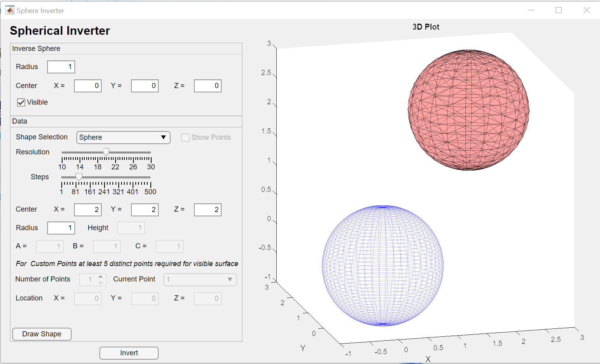

Projects
Spherical Inverter

A MATLAB-based GUI application that visualizes three-dimensional spherical inversion. Performs inversion on spheres, cylinders, ellipsoids, custom point sets, and MATLAB functions passed by the user. Resgarch Report.
Firewatch
Firewatch picks up real-time tweets about wildfires to track the movement of the California wildfires. Using a random walk model , the application attempt to predict the spread of the fire, and elucidate areas which are most at risk. 3rd Place HackTX.
Experience
State Farm, Summer '18
- Created reverse engineering and cryptography challenges for the State Farm Capture the Flag (cyber-security competition) using C and Python.
State Farm, Summer '19
- Added a drivers-license scanning feature to an Automobile-Quote Application to quickly populate customer information in a form.
- Added a RESTful (angular) front-end on top of a Spring framework to eliminate unnecessary javascript in the front-end.